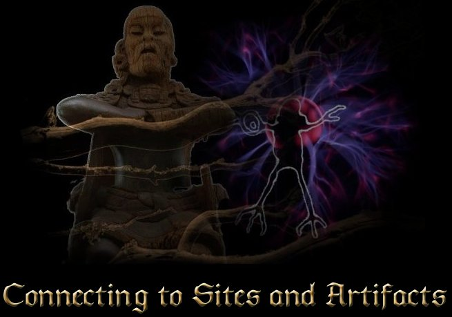
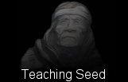

|  |
|
Page4
“The more attached you are the less likely you will see it coming!”
There
are many ways to connect to the past. I have found one of the most
efficient methods is to sit in silence at a sacred site, in a meditative
state. (Performing ceremony at the sites is an insult to the
builders, journeying or meditating to learn is honouring these
individuals). In this meditative state one can connect to the
knowledge embedded in the site simply by immersing oneself into the
energy, the longer the better (hours or days worth of exposure).
An alternative method is a meditation or journey at home with an
artifact from the past. Both give one the advantage and the opportunity
of being in the physical and yet connected to the moment of the
artifacts creation. Unfortunately connecting is not as easy as it sounds
for we need what are called “Bridges” or connectors that can link our
consciousness to the past event. It is well known that the more time one
is immersed in the sacred site energy, the easier it becomes to connect
with, as this itself is a “Bridge”. The purpose is to attune to the
energy, assimilating the vibration and creating a common “vibrational
ground” so that an exchange can take place. Once you are resonating to
this level of the energy, regardless of “flow direction”, the
information will start flowing in.
With a small difference the artifact method requires a different type of
bridge than the sites because we are not standing in the middle of the
energy, like at a site. Also the artifacts energy is usually much more
subtle as it was created by one individual as compared to the many that
are involved in large sites. This artifact method needs a stepping stone
or resonate tuning bridge that can act as an intermediate with the
artifact. This intermediate one is usually a familiar “Bridge or
Communicator” object that you have worked with prior. Shamans that use
tools will understand this type. With one in each hand and the
meditation set with desire, one only has to clear ones mind and allow
the information or experience to happen.
Connecting to the past by using “Bridges” (be it energetic or physical)
is necessary if true connection is to be made. Time is not what we
perceive for it has barriers that are necessary to allow individuality
of creation. Time is a very complex design of cycles that are possible
to connect with or bridge if one understands what time is and its
structure. Without understanding the structure you are guessing at
probable outcomes.
There is absolutely nothing in current scientific understandings that
comes close to understanding time, and that is why this work is so
valuable. One cannot do it alone but many can. It has to be done this
way, for this is the way of the mystic, the way of our original human
design, a design that is patterned in our DNA.
In very general terms; gaps in time are due to frequency barriers that
exist in years, months, days, and even hours of our lives. They go
unnoticed by us as we have all produced a perception of a seamless
reality (starting from our early childhood training as humans). The
greatest energetic part of creation’s physical form will be its original
injection into a reality. From there, “time” appears to erode this
creational form away, as it is a composition of the elements and other
biological processes that have been orchestrated by consciousness.
After the main injection or impetus of energy, the form only
needs a small amount of energy for maintenance and support in the
physical. The reason for this is that there are billions of smaller
consciousnesses that were solicited in the co-creation of this physical
form.
Why time is an evolving change:
The
seamlessness of time is a product of continuous energy supply from many
levels of our being, mainly nonphysical, but because the original
impetus to create has been fulfilled (at the end of the cycle), the
requirements will now change. The form finds itself in a state of
repetition (the same as time cycles, due to the Universal Structure’s
flow). But this is not a supportive role for spiritual evolution, for it
is the evolution of consciousness that is the only reason for existence.
(Remember, consciousness is
not in the brain as it is nonphysical or what we call spirit)
The original form continues to cycle, in its original cycle of existence
but as said, consciousness evolves and the original form’s design gets
left behind. Conscious energy, (our awareness of it is not necessary)
upon recharging the physical creation in the new cycle will produce a
slightly different physical form or body image. The result is a body
that has a very small difference than that of the original. This is a
result of a shift in consciousness upon entering a new cycle. The slight
change in desired needs, in the new cycle will create a slight change in
the physical form and its expressions. This happens all the time in our
lives from the smallest to the largest cycles, until we fulfill our
desired expression here. This can be observed as the change, we
understand, as the aging process.
New cycles in the Earth and Universal structure will be under influences
of new energies and flows from ever higher levels of consciousness.
Physical Reality thus changes and evolves as does the consciousness that
created it. Bridging the past is not a matter of remembering. It is a
process of following the conscious energy back into the original desire
for its creation, and into that particular cycle/time, assimilating to
the frequency of the period or type of consciousness cycle that was part
of the artifact’s creation. This is the doorway into the artifact’s
world.
There are many types of consciousness and that includes humans present
or past. Each type of consciousness will follow the design of its Soul
Group configuration. For more on Soul Groups see “The Schematic of God”
book. In amongst this are veils or frequency bands that hold resident
frequencies together (time being one aspect). You cannot just jump in or
force your way in without prior preparation. For instance you cannot
travel back five thousand years without first adjusting your modern
vibration to earlier time frames and conscious matrixes. Typically our
modern consciousness can only connect back to a few generations. To go
further back in time you need tools and these are available to us.
Time is a very complex structure that will be explained in ways and
levels never before shown or examined. This material is already
available but will need to wait for editing.
|
|
 |
| Site Map |